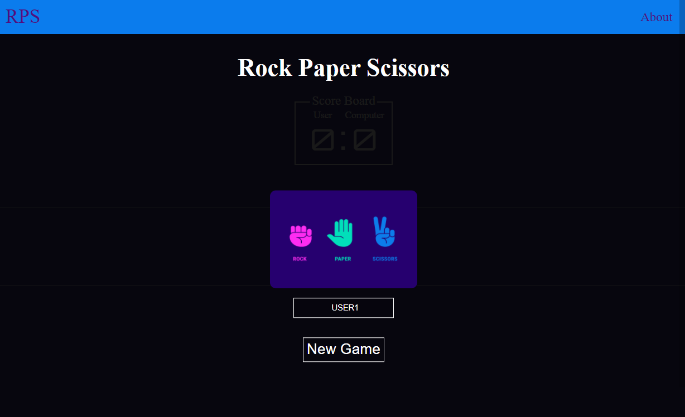

About Rock Paper Scissors
What is Rock Paper Scissors?
It is a hand game usually played between two people, in which each player simultaneously forms one of three shapes with an outstretched hand. These shapes are "rock" (a closed fist), "paper" (a flat hand), and "scissors" (a fist with the index finger and middle finger extended, forming a V).
How do I win the Game?
It has only two possible outcomes: a draw, or a win for one player and a loss for the other. A player who decides to play Rock will beat another player who has chosen Scissors ("rock crushes scissors" or sometimes "blunts scissors"), but will lose to one who has played Paper ("paper covers rock"); a play of paper will lose to a play of scissors ("scissors cuts paper"). If both players choose the same shape, the game is tied and is usually immediately replayed to break the tie.
Who made this marvelous work of Art?
Funny you should ask....It's author is none other than the great Aldaine Clarke. This was originally just a project to have on my portfolio, but I ended up loving the concept so I decided to make it better.